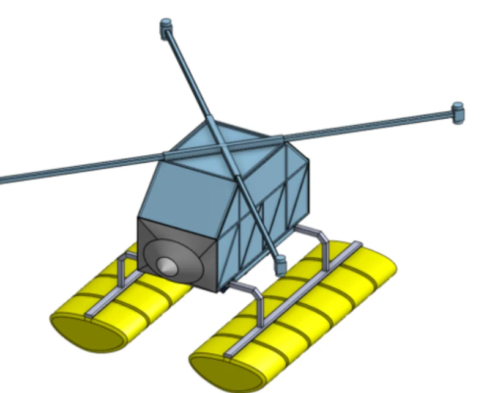
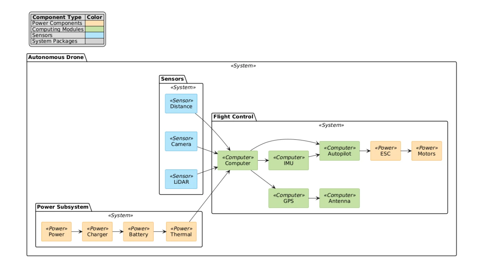
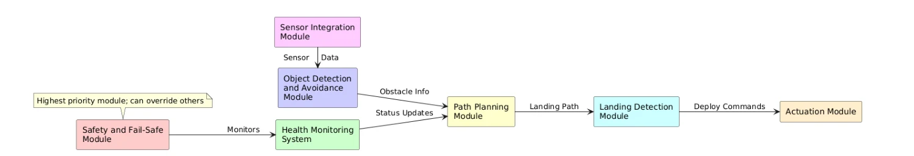
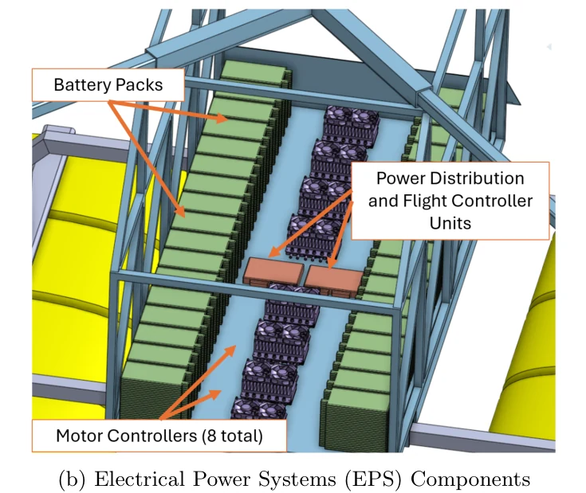

The Aircraft
GoAERO @ Virginia Tech is a roughly 40-student team designing an emergency-response flyer for patient transport and medical delivery where airlifts are too costly or slow. The concept from our December 2024 preliminary design review: a fully electric VTOL with four detachable arms carrying contra-rotating propeller pairs (eight 35 kW motors), a welded aluminum fuselage, inflatable landing gear, and a design mass near 480 kg with a 128 kg payload.

My Role
I led the avionics and programming workstream, coordinating software architecture and integration planning with the other aircraft subteams.
- Defined the compute architecture: an NVIDIA Jetson AGX Orin as the main computer, a Jetson Xavier NX running mirrored flight applications as a hot backup, and a Holybro Pixhawk 6X Pro handling low-level control over MAVLink, with Teensy microcontrollers driving the parachute and pontoon safety systems.
- Set the software stack: Linux, ROS 2, and C++, with PX4 chosen over ArduPilot for its ROS 2 support, and SITL simulation as the primary test path before hardware.
- Defined ROS 2 messaging and interface expectations between flight stack, sensors (IMU, GNSS, barometers, LiDAR, landing cameras), and onboard compute.
- Built the validation path using SITL/HITL, telemetry, command pipelines, and staged integration milestones.
- Contributed to the preliminary design review package; supported the multidisciplinary team that received a $30K NASA University Innovation Prize.

Software Design
The software hierarchy is modular, with a safety and fail-safe module at the highest priority that can override every other module. Sensor integration feeds object detection and avoidance; health monitoring, path planning, and landing detection sit between perception and actuation. Navigation uses deterministic algorithms (SLAM, RRT) over learned methods so behavior stays predictable outside the training-data distribution.

Electric Power System
The avionics section also covered the electric power system: 2,065 Amprius SA80 lithium-ion cells in a 35-series, 59-parallel pack (70.6 kWh at 119.7 V) sized for a 275 kW takeoff peak, an Amphenol power distribution unit, MGM COMPRO ESCs matched to the motors, and battery/motor health monitoring down to per-cell temperatures and motor vibration.
